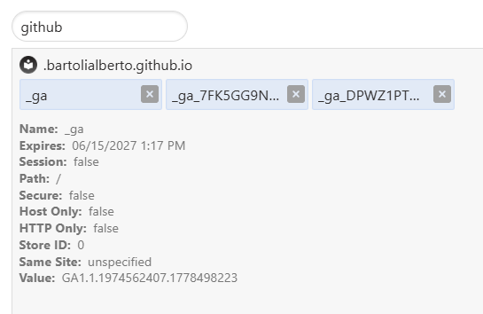
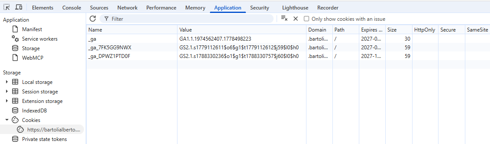
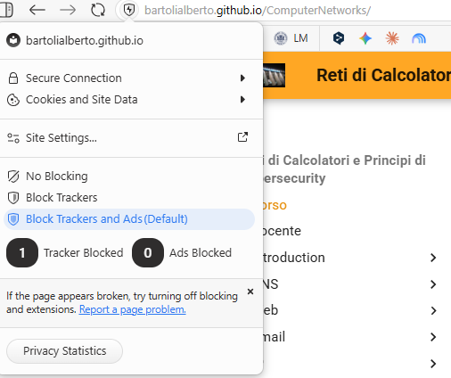
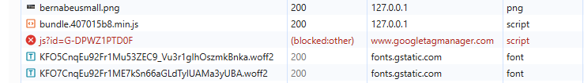
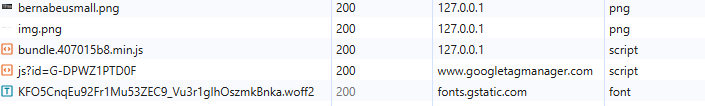

Risorse
WWW: Documenti e URL
- Cybercriminals Tampering with QR Codes to Steal Victim Funds The FBI is issuing this announcement to raise awareness of malicious Quick Response (QR) codes. Cybercriminals are tampering with QR codes to redirect victims to malicious sites that steal login and financial information.
- The Real Difference Between a URL and a URI Io non ho mai capito del tutto la differenza, per il nostro corso non è importante...
Contenuti web: HTML
Esistono tonnellate di tutorial sui contenuti web (HTML, CSS, Javascript). Tutorial interattivi molto interessanti sono quelli di W3Schools.
Pagina web e Sito web
- Cloudflare Radar - URL scanner Inserisci un URL ed ottieni un report completo delle risorse necessarie per visualizzare completamente la pagina identificata da quell'URL.
-
urlquery Sito con funzionalità analoga. Qui sotto risultati del Luglio 2023 per alcune pagine web:
-
HTTP Archive Reports Global statistics on size of web pages, images, JavaScript scripts and so on.
- W3Techs Statistics Similar statistics, collected on a different sample, with different aggregations. This specific page allows finding usage statistics for Cookies.
Contenuti web: CSS, Javascript
Esistono tonnellate di tutorial su questi argomenti. Tutorial interattivi molto interessanti sono quelli di W3Schools.
Anche quelli di mdn (Mozilla Developers Networks) sono molto ben fatti
- Getting started with the web
- Playground Per fare test interattivi.
Come fare un sito web
- OVHcloud - VPS Esempio di Virtual Private Server professionale, a pagamento.
- OVHcloud - web hosting Esempio di Web Hosting professionale, a pagamento.
HTTP
The mdn (Mozilla Developers Network) web site has a lot of very high quality information. If you want to use this site, use it carefully: it contains a lot of material that is not covered in the lectures; and, it contains a lot of additional information about material that is covered in the lectures.
Trasmettere dati (FORM)
Esempio banalissimo
Il file simpleform.html (negli esempi di contenuti web) contiene un semplicissimo form in cui l'attributo action punta ad una pagina web pubblica che stampa il contenuto del form ricevuto. In altre parole, a quell'URL è in ascolto un web server che torna un documento dinamico contenente l'elenco dei parametri nel form ricevuto (provate a pensare a cosa deve fare quel programma).
Quel file si può aprire con un browser anche senza farlo servire da un web server.
Provate a riempire il form ed inviare i dati (il form non ha un elemento submit, quindi la submission avviene premendo enter mentre il mouse è nella casella di testo di input). Poi provate a modificare il form ed inviare i dati.
Esempi di pagine reali
Trovare esempi sensati e comprensibili nelle pagine web che usiamo quotidianamente è difficile perché tali pagine:
- Usano moltissimo codice Javascript
- Sono composte da molte risorse che non hanno nulla a che vedere con il FORM
Ho trovato alcuni esempi che potrebbero essere utili da questo punto di vista. Sono tutti esempi che seguono questo pattern:
- Pagina
URL-Xcontiene FORM - Dati inviati con
GET URL-Y?query-string-con-dati-inseriti(query string) - Browser mostra
URL-Y?query-string-con-dati-inseritie documento "evidentemente" dinamico costruito sulla base dei dati inseriti nel FORM
Anche se i FORM sono "quasi sempre" costruiti con METHOD="POST" invece che con METHOD="GET", questi esempi sono effettivamente reali e, credo, istruttivi.
Il Meteo
- Caricare il sito
https://www.ilmeteo.it. - Aprire i Developer tools.
- Posizionare il mouse nella search box. Clic tasto destro, ispeziona. Analizzare il codice HTML "intorno" alla posizione del mouse.
Si vede che, a parte il codice JavaScript "abbondante e complicato", la search box è un elemento HTML input con un attributo nome=citta. Si vede anche che quell'elemento HTML è all'interno di un elemento HTML form come questo:
<form ... action="https://www.ilmeteo.it/meteo/cerca" method="get" ...>
Adesso:
- Selezionare "Network" nei developer tools
- Scrivere il nome di una città nella search box (es. "Trieste")
- Premere enter. Analizzare le prime due coppie request-response.
Si vede che la prima request è effettivamente quella che ci aspettiamo in base al valore dell'attributo action nel form, al valore dell'attributo name nella search box (elemento input) ed al dato inserito:
GET https://www.ilmeteo.it/meteo/cerca?citta=Trieste
La response è una redirection contenente uno header Location verso l'URL https://www.ilmeteo.it/meteo/Trieste.
La seconda request è inviata dal browser automaticamente verso quell'URL e poi viene mostrato un documento molto complesso ed "evidentemente dinamico" con le previsioni del tempo valide in quel momento per la città desiderata.
Sostituendo Trieste nella barra degli indirizzi del browser con il nome di un'altra città (es. Firenze) e premendo enter, viene mostrato un tab con le previsioni del tempo per Firenze ed URL https://www.ilmeteo.it/meteo/Firenze. Osservando il traffico dei developer tools si vede che non c'è stata nessuna redirection. Evidentemente, https://www.ilmeteo.it/meteo identifica il programma sul web server che genera il documento dinamico usando come input la terza parte dell'URL.
digonline
- Caricare il sito
https://www.digwebinterface.com/. - Clic tasto destro in una zona senza testo. View page source. Analizzare il codice HTML cercando gli elementi
scripte l'elementoform.
Si vede che, a parte il codice JavaScript "abbondante e complicato", il documento descrive essenzialmente un form in cui i vari elementi di input sono organizzati spazialmente in un elemento table non visible (ha attributo border=0).
Per vedere quali sono gli elementi html che corrispondono ai vari elementi di input del form visualizzato è sufficiente posizionare il mouse su uno degli elementi, clic tasto destro, ispeziona. Si vede che c'è una textarea, varie input type="checkbox" ed un menu drop-down (non visto a lezione) descritto da un elemento select.
I valori dell'attributo name per ogni elemento input (e per la textarea) determineranno il contenuto della query string inviata al web server al momento del clic su "Dig".
Posizionando il mouse sul bottone "Dig" ed ispezionando il codice html si vede che il bottone è un input type="submit": è il bottone che provoca l'invio dei dati al web server.
Gli aspetti salienti dell'elemento form sono:
<form ... action="/" method="get" ...>
L'invio dei dati quindi avverrà quindi con una GET verso l'URL https://www.digwebinterface.com/; i dati inseriti nel form saranno in una query string appesa in coda a quell'URL.
Ad esempio, effettuando una RR di tipo A per www.units.it e lasciando tutte le altre opzioni nella confifurazione di default, l'URL richiesto al web server (e visualizzato dal browser) sarà:
GET /?hostnames=www.units.it&type=A&ns=resolver&useresolver=8.8.4.4&nameservers=
Il traffico HTTP si può visualizzare selezionando "Network" nei developer tools. In questo caso il traffico è molto semplice e non c'è nessuna redirection.
Sessioni HTTP
- Shopping basket: brevissimo esempio per ribadire l'importanza dei contenuti dinamici che dipendono dalle richieste precedenti inviate da uno specifico browser.
Come vedere i cookie
Quanto segue è per i browser Chromium-based (Chrome, Edge, Vivaldi).
- Preferenze del browser - Cookie values: permette di vedere tutti i cookie memorizzati nel browser. Solo nome e valore di ognuno.
- Developer tools - Application - Cookies: permette di vedere i cookie usati nel tab corrispondente. Tutti gli attributi (compresa scadenza).


Authentication vs Authorization
- Vulnerabilità analoghe a quelle di 18app (IDOR: Insecure Direct Object Reference).
Analytics e Tracking
- Browser fingerprinting Scoprite quante cose scopre del vostro browser questo sito web.
Tracking senza third-party cookies
Most browsers today block third party cookies. Google Analytics bypasses third-party cookie restrictions primarily because it does not rely on third-party cookies for standard traffic measurement. Instead, it uses first-party cookies.
For example, this website is built with mkdocs: static HTML and JavaScript files hosted on GitHub Pages. Each page has a small script in each page, inserted by mkdocs automatically (property google_analytics defined in mkdocs.yml):
<script id="__analytics">function __md_analytics()...
This script contains a "GA_ID", constructed by Google Analytics and specified in the google_analytics property (G-DPWZ1PTD0F). The script runs upon each page loading and loads a Javascript library from Google Analytics (gtag.js). This library:
- checks for an existing
_gafirst-party cookie (i.e., on the domaingithub.io); - if this cookie does not exist, the library creates one whose value is GA_ID;
- whenever a new page loads, the library assembles tracking information (GA_ID, page title, referrer and alike) and sends it to a Google Analytics endpoint; these values may be embedded in the HTTP request as a query string;
- Google Analytics will group requests based on Client IDs, without any need for third-party cookies.
The reason why gtag.js may handle first-party cookies even though it was fetched from a Google Analytics location is because the <script src="..."> tag does not create a separate origin context. Once loaded, the script executes as part of the including page (the GitHub Pages document) and operates on that page's own document object.
Upon expiration of the first-party cookie, the browser will be counted as a “new” browser (e.g., Apple so-called intelligent tracking prevention let cookies expire after 7 days).
Browsers with “strict” blocking of ad/tracking will block the loading of gtag.js and the sending of the request at step 3, because the Google Analytics endpoint appears in the list of sites to block. Visits from those browsers, thus, will never be counted. In order to count those visits, a more complex structuring of the website is required.

Browser with "strict" blocking
Browser with "strict" blocking: network traffic.
Browser without any blocking: network traffic.